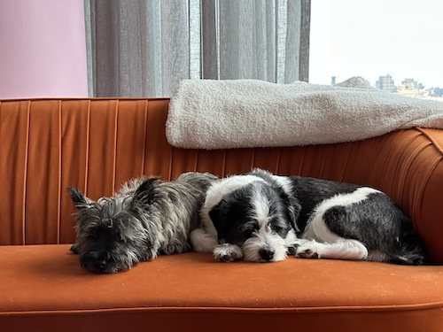

Taking Care of the Boys

Daily Schedule:
- 7am-10am: first trip outside
- Breakfast when back in from the first walk
- Breaks outside every 4-6 hours during the day
- One "big" walk per day to the Lighthouse Dog Run
- Dinner: served any time from 6pm-8pm
- Take them outside IMMEDIATELY after dinner - Muttly gets anxious to go out after eating dinner
- "Last call" before bedtime any time between 9pm-12am
Food ("Puppy Soup"):
- They get fed separately:
- Muttly in the laundry room // Rufus by the door to the balcony
- Prepare both bowls then give Muttly his FIRST (Rufus is more patient)
- BREAKFAST:
- Rufus: little less than half a scoop of kibble + supplement
- Muttly: 1/4 scoop of kibble with some wet food and 1/8 tsp of Tylan
- DINNER:
- Rufus: little less than half a scoop of kibble
- Muttly: 1/4 scoop of kibble with some wet food, 1/8 tsp of Tylan and one packet probiotic
- Food/Medicine Locations:
- Kibble in pantry (Muttly's is in the big container in the bottom left corner, Rufus's is in the pink bag)
- Wet food and probiotics on the top shelf of the fridge
- Rufus's supplement and Tylan to the left of the coffee bar
- Extra wet food to the left of the orchids
Other Things to Know:
- Feel free to give them as many treats as you want!
- They are usually very sleepy in the morning, more active and excitable in the afternoon
- Muttly might get excited and run "laps" around the apartment if you're eating or cooking
- When they play they make scary-sounding "gremlin" noises, it is not a cause for concern!
- Muttly is a thief with zero remorse. He can and will jump on the dining room table - the only truly safe surfaces in the living area are the island and countertops. If he does steal something, he's good about releasing it when you say "drop it" calmly but sternly, then reward with treats.
- Muttly on walks:
- Muttly has a high prey drive and will try to lunge at pretty much everything - especially trucks, bicycles, and bigger dogs. The best way to troubleshoot for this is to do the “touch” command and reward, repeatedly, until the object has passed
- He is usually fine in the dog park but can definitely be an antagonist, so just stay aware of him seeming a little too interested in other dogs
- He LOVES the small dog park in front of the building (they will both drag you in there) because he wants to wait for runners and bikers to go by so that he can “chase” them like a psychopath, this is normal behavior